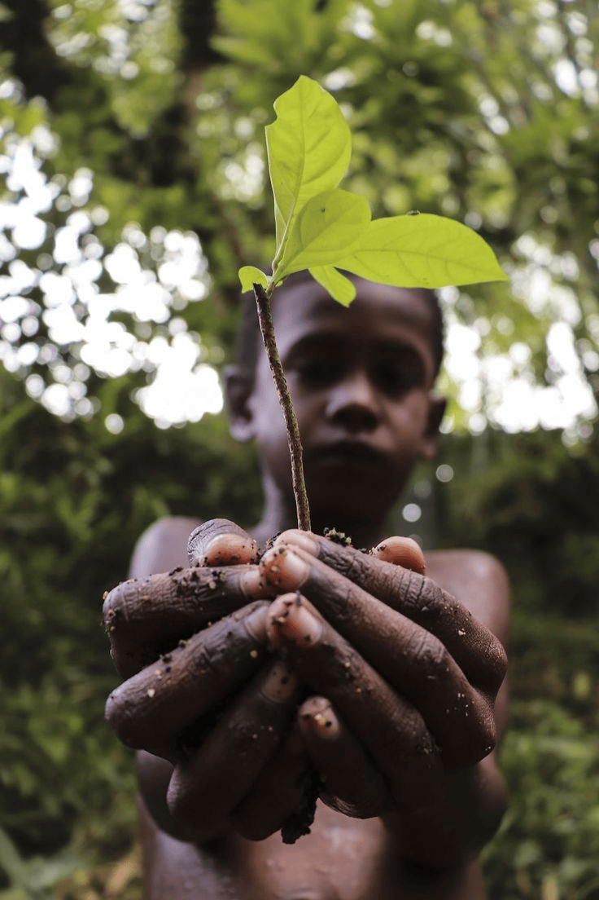
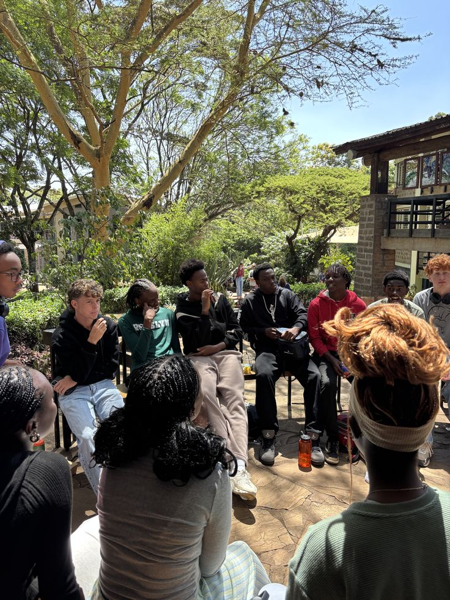
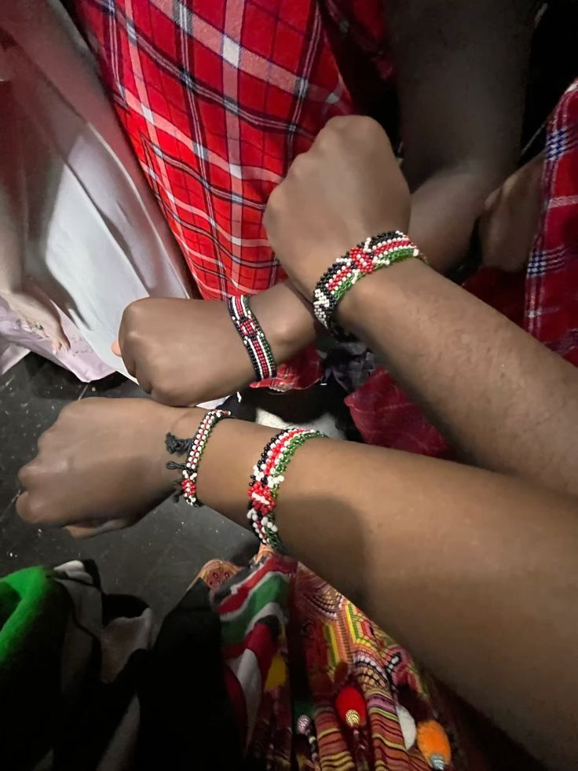
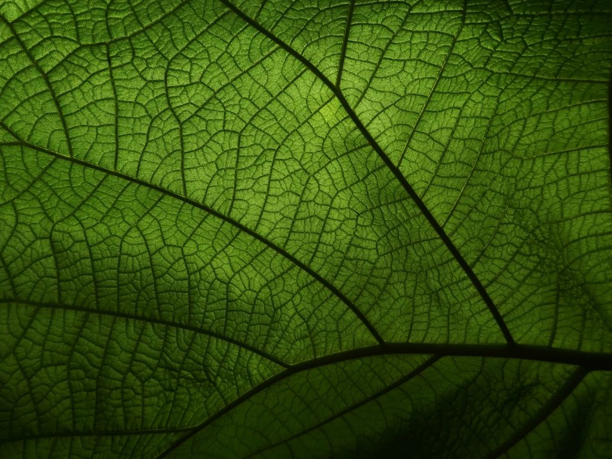
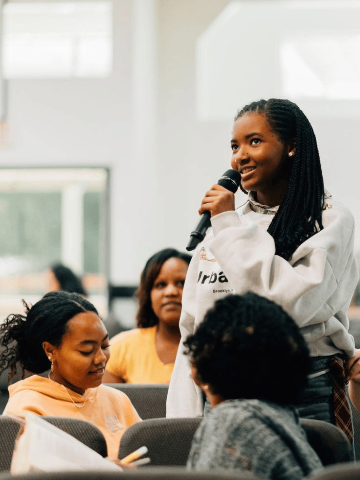
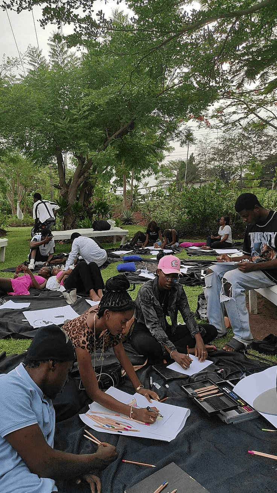
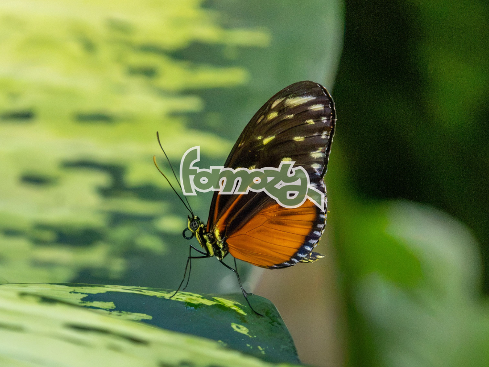
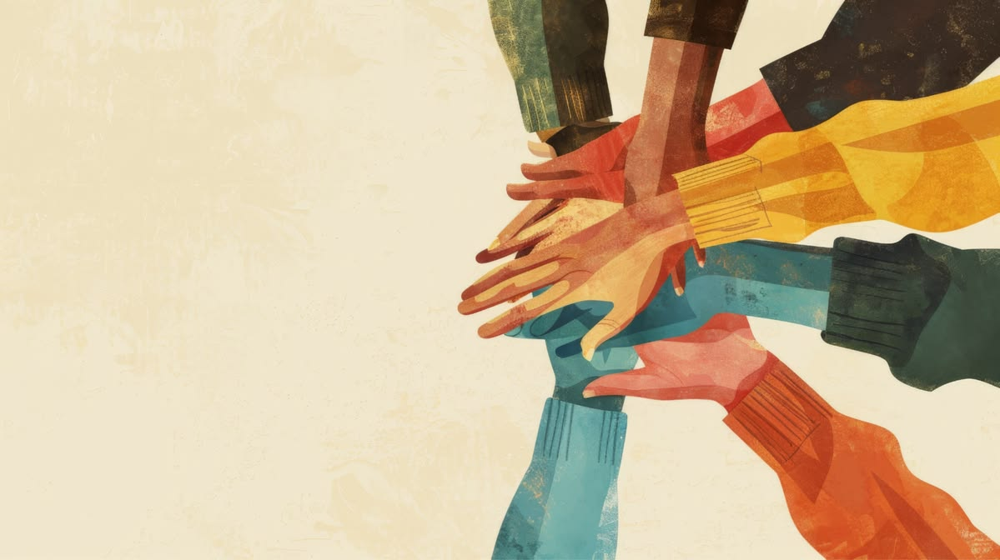

Environment and Sustainability
Environmental education, tree planting and tree growing, school greening and environmental stewardship, with community action suited to local conditions.
Leafspire is a youth-led social impact and community development initiative. We support youth development in Kenya by working with young people, schools and local communities to turn what people learn into practical action close to home.
Our work brings together environmental action, youth leadership and community participation, and wellbeing and social connection.
When young people look after their surroundings and one another, communities become greener, stronger and better connected.


To empower young people and communities to create healthier, greener and more resilient futures through environmental action, youth leadership, community participation and integrated wellbeing initiatives.
Communities where young people lead positive change, people thrive, and the environment is valued, protected and sustained for future generations.

Leafspire joins two ideas that we think belong together. It is the meaning we give the name, and it shapes how we work.
Growth, renewal and life. The care we owe the natural world, and the patience it takes to nurture something until it thrives.
Rising and reaching upward. Aspiration, development and the chance to become something greater than where we began.
Together they hold our belief that progress needs both people and the environment: tending what is close to us while aiming higher.
These are not separate services. Each area supports the others, and together they shape how we work with schools, young people and communities across Kenya.

Environmental education, tree planting and tree growing, school greening and environmental stewardship, with community action suited to local conditions.

Supporting young people to identify community needs, take responsibility, organise activities and take part in practical solutions.

Creating supportive environments where young people can take part, connect with peers, build awareness and find appropriate support.
A tree-growing day, for example, gives young people a chance to lead, work as a team and spend time with one another. Caring for a shared space gives people a reason to keep showing up, and that sense of belonging helps environmental work last.
Read about the causes we care aboutOur causes describe what we care about. These five commitments describe how we go about it.
Young people are not guests in our programmes. They propose ideas, take on responsibility and make decisions that shape what happens in their schools and neighbourhoods.
Awareness turns into practical action: growing trees, using resources responsibly and protecting biodiversity, with present and future generations in mind.
Schools, community groups and local stakeholders help shape and share the work, because lasting progress depends on people acting together.
We make welcoming spaces for connection, inclusion and awareness of wellbeing. We build supportive communities; we do not offer clinical treatment or counselling.
Knowledge-sharing, creativity and the Sustainable Development Goals give young people ideas and practical ways to contribute to social and environmental change.
Proposed flagship programme, still being developed
The Green Schools Initiative is our proposed flagship school environmental programme. It is intended to bring environmental education, tree growing and school greening into school life, with students taking the lead.
We plan to develop and pilot it first in Trans Nzoia County, Kenya.
Activities will respond to each school's needs and environmental conditions, so that what is planted, and how it is looked after, makes sense locally.
Learn About Our Programmes
In development
FOMOZY is an app we are developing at Leafspire. It is designed to encourage people to take part in activities and challenges linked to the Sustainable Development Goals.
FOMOZY is not available yet. A short survey will help us understand what people would like to see, and your answers will help shape what we build.
Take the FOMOZY Survey
Our YouTube channel is where we share Leafspire's activities, community work and stories. Take a look and see how young people and communities are getting involved.
Young people, schools, organisations, environmental partners and individual supporters all have a part to play in youth-led community initiatives. Here are some ways to start.
Give your time and skills to tree-growing days, school activities and community action.
See how to volunteerSchools, organisations and environmental partners are welcome to talk to us about working together.
Start a conversationContributions help us develop and pilot programmes with schools and communities.
Support LeafspireFind out what we are developing, starting with the Leafspire Green Schools Initiative.
View our ProgrammesSupport helps us develop and pilot programmes with schools and communities, including environmental learning, tree growing and youth-led activities. Your contribution helps turn these plans into practical action.
Donate to LeafspireYou are now part of our community. Expect updates on programmes, events and stories.